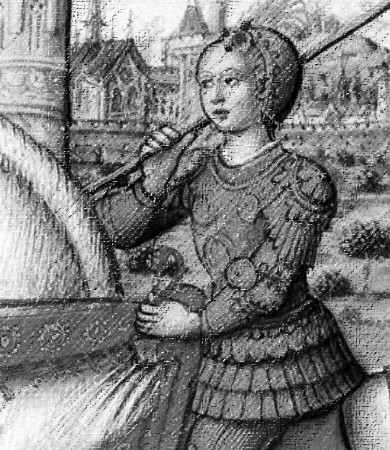

Nata il 1867, Marie Curie ha avuto un ruolo di prim’ordine nel
campo della fisica e della chimica, studiando fin da giovane le
sostanze radioattive. Il suo impegno la portò a diventare la prima
insegnante donna della Sorbona. A Marie Curie attribuiamo la
scoperta del polonio e il radio, ma non ne registrò i brevetti, per
lasciare il suo sapere a disposizione della comunità scientifica.
Fu l’unica donna al mondo a vincere due Nobel, in due campi
diversi: il Nobel per la Fisica nel 1903 e per la Chimica nel 1911. La scienziata morì di anemia aplastica nel 1934.
Rita Levi Montalcini
Rita Levi Montalcini nacque a Torino nel 1909. A lei dobbiamo la scoperta e l’identificazione del fattore di accrescimento della fibra
nervosa (NGF), per la quale ha vinto il premio Nobel per la
medicina.
Nel 2001 è stata nominata senatrice a vita “per aver illustrato la
Patria con altissimi meriti nel campo scientifico e sociale”. Morì nel
2012 a Roma.
Giovanna D’Arco
Vissuta nel 1400, in piena guerra dei cent’anni, la giovanissima
Giovanna riuscì a convincere il principe Carlo di Valois di essere
stata scelta da Dio per guidare l’esercito francese alla vittoria, e
così fu.
A soli 19 anni, venne dichiarata eretica e condannata al rogo.
Giovanna D’Arco, Patrona di Francia, è un vero e proprio simbolo di
libertà e giustizia, protagonista della cultura popolare.

Madre Teresa
Madre Teresa è uno dei simboli più importanti del Novecento.
Fondatrice della congregazione religiosa cattolica delle Missionarie
della Carità, Madre Teresa ha trascorso molto tempo in India,
prendendosi cura degli “ultimi” affetti da gravi malattie come lebbra
e HIV.
Vincitrice del Premio Nobel per la Pace nel 1979, è morta nel 1997
e, nel 2003, è stata beatificata come “Beata Teresa di Calcutta”.
Margaret Thatcher
Margaret Thatcher è stata una delle donne importanti del 900 e più
influenti nella politica del Regno Unito.
Fu la prima donna a ricoprire la carica di primo ministro, guidando il
Regno Unito dal 1979 al 1990. Fu leader del partito conservatore e
segnò un’epoca, tanto che gli anni ’80 vennero soprannominati “era
thatcheriana”.
Malala Yousafzai
Malala Yousafzai è una giovanissima donna che sta combattendo
una dura e ambiziosa battaglia per il diritto all’istruzione.
A soli 17 anni, Malala ha ricevuto il premio Nobel per la pace,
grazie al suo coraggioso impegno per il diritto all’istruzione, negato
alle donne del Pakistan, suo paese di origine, da un editto dei
talebani.
Nel 2012, mentre tornava a casa da scuola, un uomo le ha sparato
alla testa, ma è riuscita a sopravvivere, dopo essere stata curata in
Inghilterra. Nonostante le continue minacce, Malala continua a
portare avanti la sua battaglia con tenacia, affinché il diritto
all’istruzione diventi davvero universale.
Anna Bolena
Anna Bolena fu la seconda moglie del Re d’Inghilterra Enrico VIII.
Per sposare Anna Bolena e annullare le sue nozze con Caterina
d’Aragona, Enrico VIII diede vita allo scisma anglicano, creando la
Chiesa d’Inghilterra.
Tuttavia, la lotta per il figlio maschio e una serie di altri conflitti
portarono alla condanna a morte di Anna Bolena, caduta nelle mani
del boia nemmeno trentenne. Dal matrimonio tra Anna Bolena e
Enrico VIII nacque Elisabetta I, che diede vita ad un lungo periodo
di prosperità e fioritura artistica e culturale dell’Inghilterra, passato
alla storia come “era elisabettiana”.


.jpg)